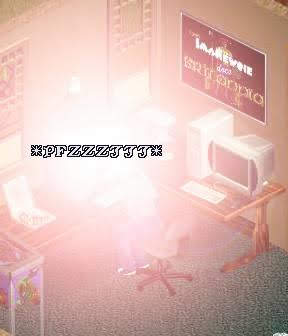
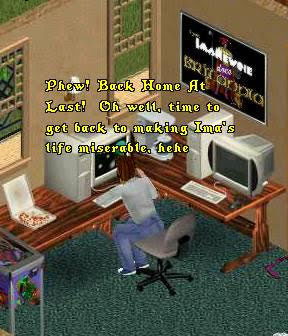
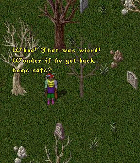
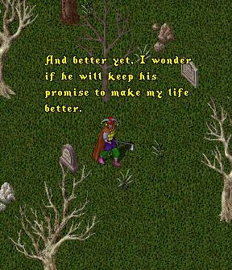
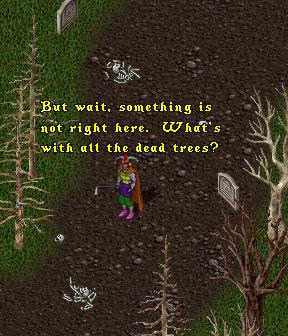
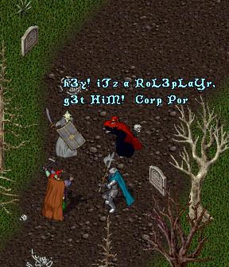
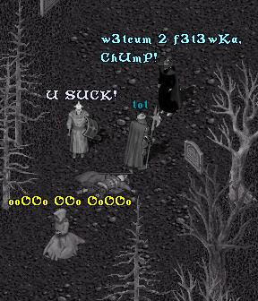

Episode 109: There's no place like home - Last week's episode ended with a gigantic flash of light and explosion. Did Tryon make it back to the Real World? And if he did, will his keep his promise to ImaNewbie to make Ima's life better? Read on...


Meanwhile back in Britannia, ImaNewbie
recovers from the flash of light to find
that everything seems to have returned
to normal ... or has it?



Yep, that's right Ima, things are different,
something to do with 'Renaissance'. Can you
spell Feluk.., Fuluchh.., Faloocck..,
FELUCCA? ... I knew you could!

